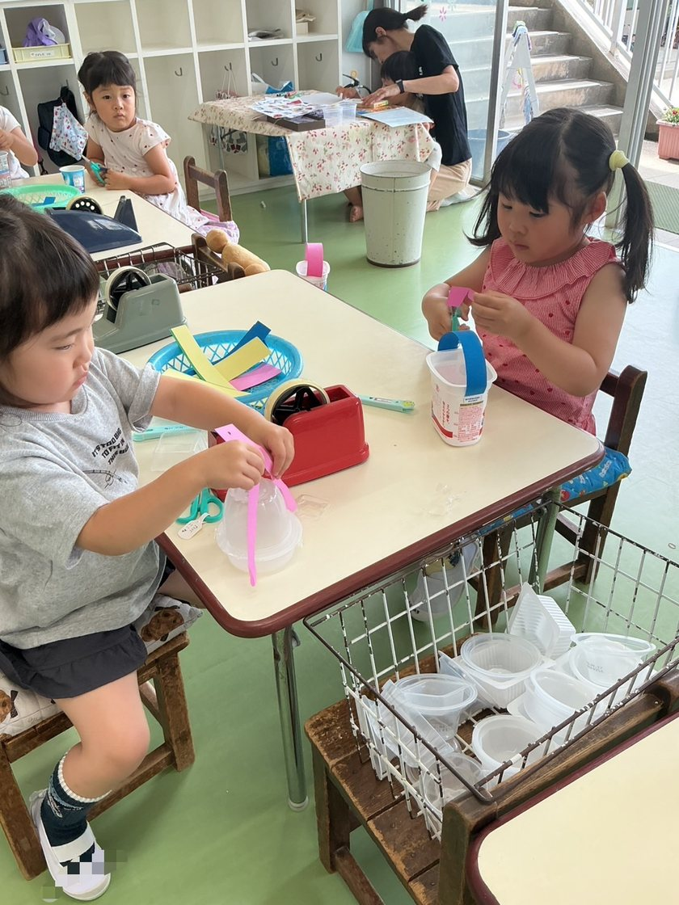
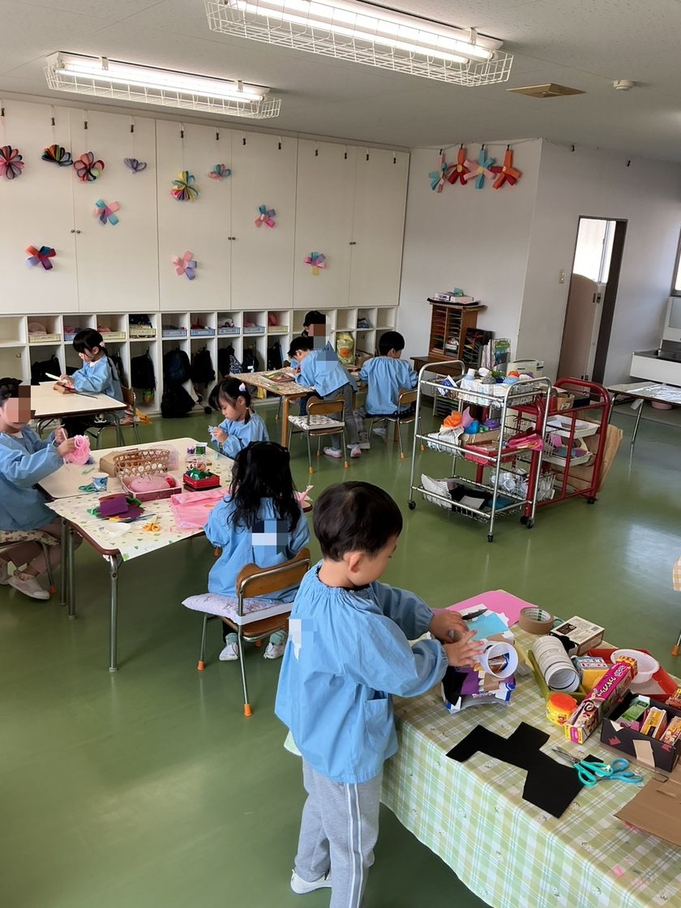
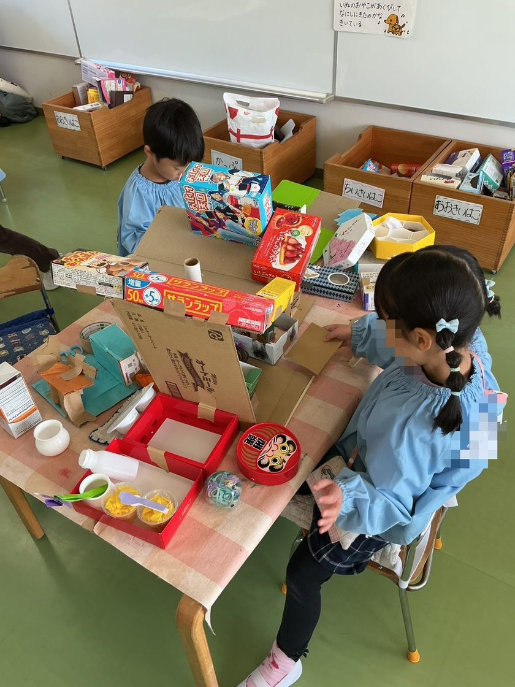
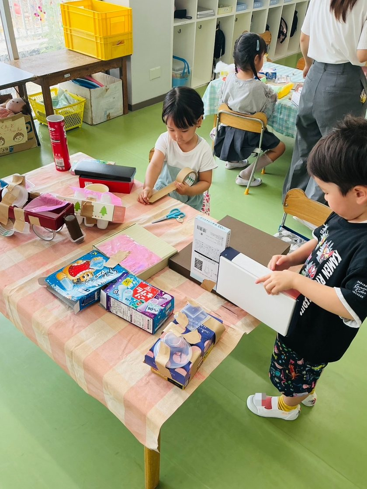
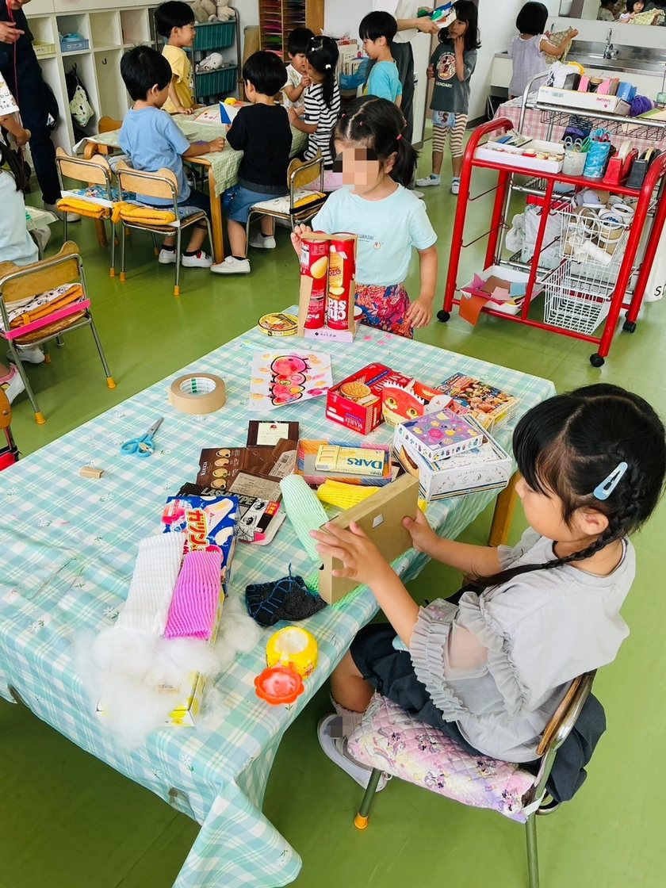
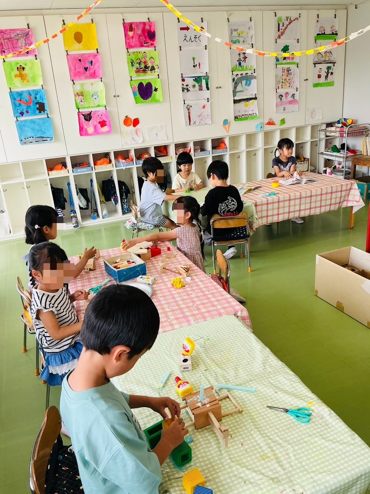
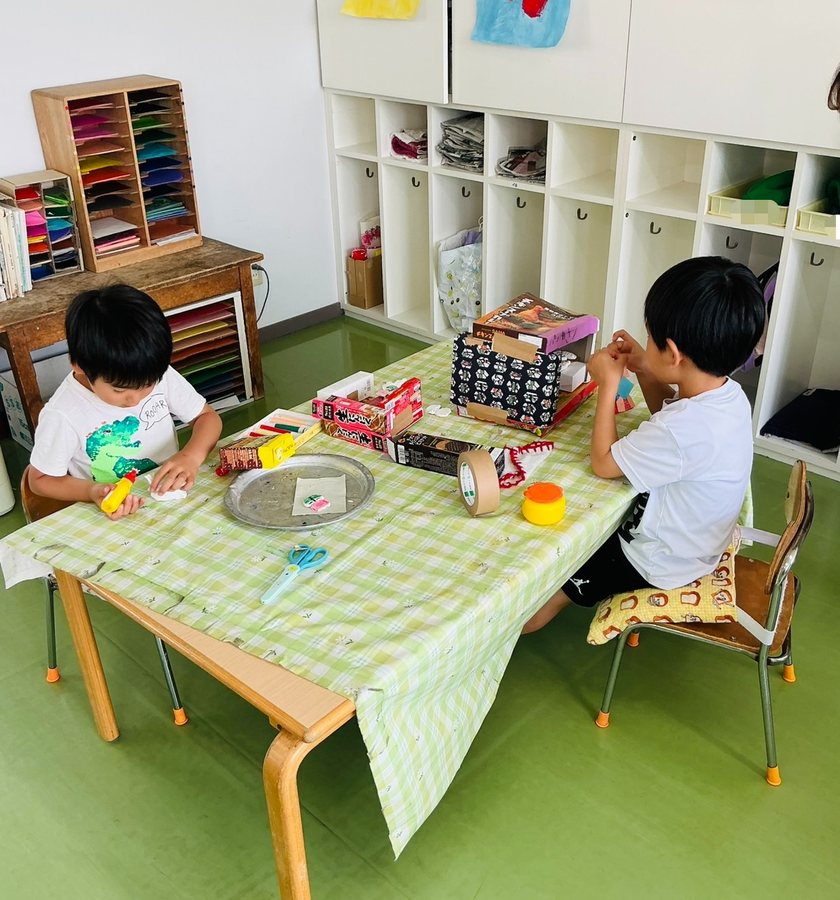

今日は何で遊ぼうかな？
自由作業
自分で選んで、

1自由に使える保育室
保育室には、遊ぶのに都合のよいものが、とりやすく並んでいて自由に使えます。
たとえば、こんなものが並んでいます
- 色がみ
- 画用紙
- ブロック
- 空き箱
- パズル


2遊びの広がり
朝、身支度を済ますと、子どもたちはそれぞれ好きな遊びを選んで活動を始めます。場所は室内の、先生の目の届く範囲内で自由に遊んでよいことになっています。
入園したころ
家で慣れ親しんだもので遊びます。
少しずつ
新しい材料や道具に手をのばすようになり、遊びの楽しさに気づいていきます。
年長児になると
年少・年中のときに出会った材料や道具を利用して、目的をもった活動をするようになります。工夫を凝らし、何日もかかって作り上げることもできるようになります。


3育まれる力
自分で課題を選択し、決断して実行する過程の中から、子どもは創造性、人間性、社会性や集中力を養います。
壁にぶつかっても、やる気や簡単にはあきらめない精神力、助言してくれた友だちのありがたさなど、多くの出会いがあり、強い心が育まれます。
創造性人間性社会性集中力あきらめ
ない心
ない心


お気軽にお問い合わせください

学校法人わかば学園わかば幼稚園
〒464-0032 名古屋市千種区猫洞通2丁目13番地
見学は随時受け付けています。
お電話でのお問い合わせ052-782-3651受付時間 平日 9:00〜15:00